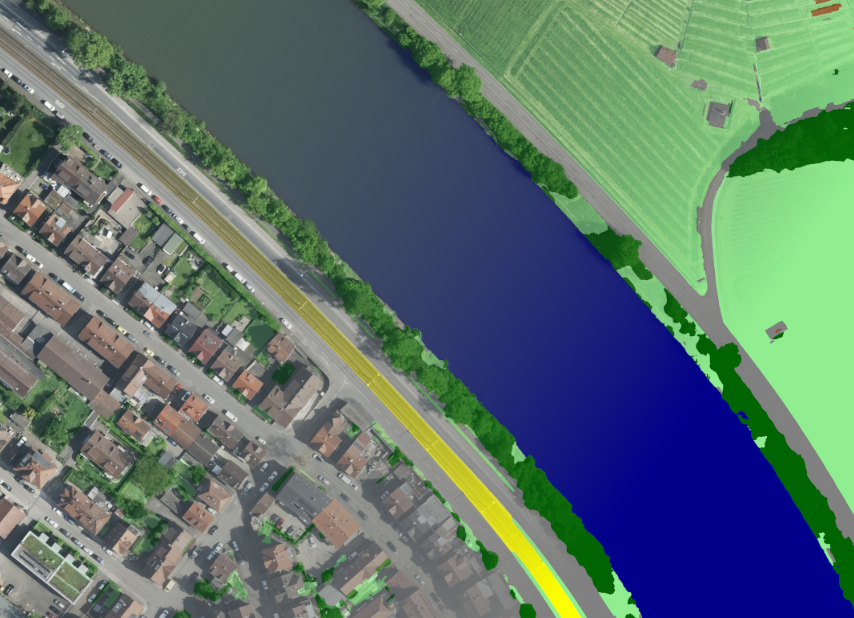

Asphalt roads, parking lots, buildings and paved courtyards: in our cities, a large share of the ground is sealed. This has consequences. Rainwater can no longer seep into the soil and instead flows into the sewer system, which can lead to flooding during heavy rainfall. Sealed surfaces heat up considerably in summer, plants and animals lose their habitats, and valuable soil is lost.
Many cities and municipalities therefore want to unseal areas in a targeted way. To do so, however, they first need to know where and to what extent the ground is sealed. Mapping these areas by hand takes a great deal of time and staff.
Detecting Sealed Surfaces from the Air
In this work, we investigated whether sealed surfaces can be detected automatically in aerial images, and which methods are best suited for this task. Our basis was highly detailed aerial imagery of the city of Stuttgart with a resolution of 8 cm. The data was provided for this project by the City Surveying Office of the City of Stuttgart.
Training an AI model to detect sealed surfaces requires appropriately annotated data. Since no suitable datasets existed for the available imagery, we had to mark by hand in numerous images which areas are sealed and which are not. Using these examples, we then tested and compared several approaches: a simple method that decides whether a surface is sealed based on color values alone, an existing AI system, and an AI model we developed ourselves. We improved the latter step by step, among other things by providing it with more, and more carefully selected, training examples.
What We Found
Sealed surfaces can be reliably detected in aerial images, but not all methods perform equally well. The simple color-based method was correct in only about seven out of ten cases. The AI methods performed considerably better: our own model correctly identified sealed surfaces in more than 90 percent of cases; unfortunately, the established system could not be reliably evaluated on the available dataset.
{kind=link}

However, there are also limitations. Even the question of what exactly counts as “sealed” is not always clear-cut, for example in the case of grass pavers or gravel surfaces. In addition, the quality of the results depends heavily on the hand-labeled examples. And since only aerial images were used, whatever lies hidden beneath tree canopies, for example, remains invisible. Another, albeit smaller, issue is occasional misclassifications, which can be corrected by using a larger number of training images.
Why This Matters
The results show that artificial intelligence can help cities and municipalities quickly gain an overview of sealed surfaces. This could make planning unsealing measures considerably easier and make the development of urban areas more transparent.
The resulting sealing map has been handed over to the City of Stuttgart, where it is now being used in a variety of applications.

This project is based on the master’s thesis of Danny Kolleth. We thank the City Surveying Office and the Office for Environmental Protection of Stuttgart for the excellent collaboration!